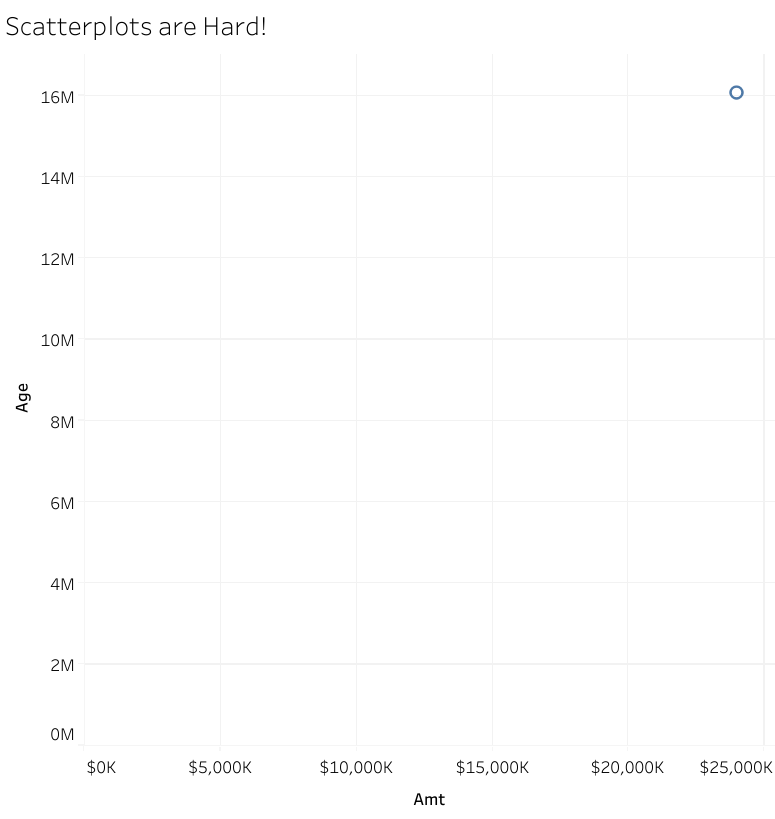
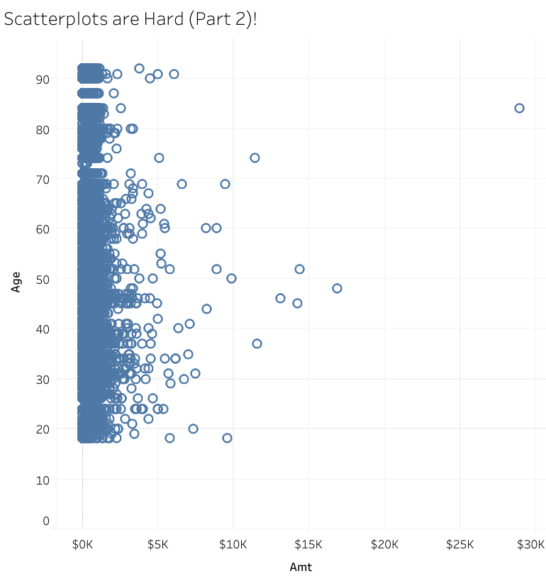

Some Lessons from Learning Tableau
Tableau is one of the most common business analytics programs out there. I first played with Tableau in the Google Data Analytics Certificate program in January 2023. At the time, Tableau struck me as analogous to Excel, a more visual point-and-click way to make graphs than R, Python, or other coding/scripting languages.
As I’ve worked with Tableau, I’ve come to think that coders/programmers trying to learn Tableau will have a very steep learning curve initially because it isn’t just a point-and-click visualization program. Tableau automatically performs operations, suggests appropriate visualizations, and generally does stuff based on context. Much of this you didn’t explicitly tell it to do so. This is great because you can make sophisticated visualizations with little knowledge or experience. But if you are used to coding every single step, it is easy to be caught out by Tableau doing an analysis you weren’t expecting. I found it easy to create incredible-looking visualizations that were flat-out wrong.
In this blog post, I will talk about how to start learning Tableau and then dive into a few areas where people with a programming background will likely be surprised because Tableau doesn’t act as you might expect. I had a tough time with Tableau because I held incorrect assumptions about how things work, and I hope this post will save folks some pain.
Getting Started on Your Tableau Learning Journey
First, just a few notes about the software and tutorials.
Tableau Public vs. Tableau
While most people think of Tableau as a visualization software, there is a whole suite of inter-related software. Tableau Prep Builder is for data preparation- importing, merging, and cleaning data. Tableau Desktop is the visualization package. The bundle includes a license for Tableau Cloud or server. This bundle is currently $900/ year for a personal license, and you cannot get a non-bundled license for the full version of the visualization software only. (Students at certain universities can get a free student subscription that contains Tableau Prep and Desktop with proof of school enrollment.)
A free version of the visualization software, Tableau Public, exists as a web app and a desktop program. The desktop program has more features than the web app, but both are less powerful than the paid version. All files you create will be posted on the website, though you can mark them as private. You obviously should not use Tableau Public for anything that contains confidential information.
Another major limit of Tableau Public is that you can only import data from a handful of data sources/ file types, compared to the nearly 100 in the paid version. But the file types included are sufficient to make some very lovely visualizations.
Some tutorials used the paid version, so that some exercises couldn’t be completed in Tableau Public. If you are stuck on an exercise, do Google to see if it involves features not available in Tableau Public.
I also found that the sample workbooks included with some technical books could not be opened in Tableau Public.
Most Tutorials Just Aren’t Enough
More so than coding languages like R or Python, Tableau is best learned by experimentation. The dynamic nature of Tableau doesn’t lend itself well to a linear tutorial/ course format.
Video tutorials suffer because so much of Tableau is point-and-click, with the menu options being different depending on where or how you click. Often, I’d have to rewatch a video section multiple times to discern exactly where the mouse cursor was when the narrator said to “click”.
Interactive courses, like those on Datacamp, suffer because there isn’t any way to check a visualization automatically. Instead, there are questions about the data (“What was the average price of a house in zipcode 45610?”) that you could answer even if you couldn’t achieve the intended visualization. I found it very frustrating because I often couldn’t make the visualization and had no idea why.
I also worked through the book “Learning Tableau 2019 - Third Edition” by Joshua N. Milligan. (To some extent, written tutorials are clearer because they have to explain exactly where and how you click. I found the book comprehensive, but I had already started working with my dataset and had problems. I’m not sure it would have been as helpful if I hadn’t been reading the book with an eye to understanding what was going on with my data. This book spelled out Tableau’s continuous/discrete and dimension/measure aspects much more clearly than any other source I looked at.
Tableau is its own World
Tableau has specialized terminology and a unique framework for data analysis that might not be clear to those experienced with other frameworks.
Tableau Terminology is Very Specialized
Tableau has a unique terminology. Knowing a few of them before you start is helpful. Many are straightforward, and you can easily map them to familiar terms. For example, dimensions are what other programs might call categories or factors. Measures are quantitative/ numerical values. Both can be either continuous or discrete.
Other terms have specific meanings that may not match your expectations. For example, an axis is created from a continuous variable. A discrete variable does not produce an axis; it produces a discrete header. This specialized terminology makes finding answers to your questions difficult- I consider both entities to be axes, and any search query I create would use axis, not header (unless I were talking about a table).
Data Types
Data types end up being critically important in Tableau. By data type, I mean not only the conventional type (numerical, date, etc.) but also whether the field is a measure/dimension or continuous/discrete. This was obscured by some of the odd terminology Tableau uses. You certainly have to handle data types in R and Python, but I’d argue Tableau is even pickier. And even if you are used to working in an environment without implicit type conversion, I think you’d still be surprised to discover how vital the continuous/discrete characteristic is in Tableau.
Reference Lines
Here’s a simple example. Many visualizations might contain a reference line specifying a value, such as a threshold/cutoff or the average/median. This line guides the eye so you can compare specific data to a significant value.
Creating a reference line is easy; you right-click on the appropriate axis, get a menu with a reference line option, and then open a panel with many options to create various types of reference lines.
Except sometimes it doesn’t work. Why? Because an axis in Tableau is only created with continuous variables, as I mentioned above. You make something that looks like an axis (and would be considered an axis in any other program) with discrete variables, but it isn’t, so you don’t get the sub-menus related to reference lines. There are workarounds; Tableau has an entire page on how to Add a Reference Line to a Discrete Header. To make this point clear- if you have a field (1, 2, 3) defined as discrete, you cannot perform the same analysis as a field (1, 2, 3) defined as continuous. (There may be excellent reasons why a numerical data field is discrete rather than continuous, so there might be better approaches than simply switching the field to continuous.)
So, if something isn’t working, look closely at the fields and ensure the dimension/measure and continuous/discrete types are set appropriately for the analysis you are trying to perform.
Graph selection also depends on Data Type
The Show Me feature provides a selection of recommended visualizations based on the fields you’ve selected. I often found that a visualization I wanted was unavailable (grayed out) because one of my data types wasn’t “correct”. This can be fixed by changing types, making dummy variables, or other workarounds similar to those mentioned for reference lines.
Granularity is Key in Tableau
Tableau often operates by grouping or aggregating data. Understanding the data granularity of a specific sheet, dashboard, or calculation is important for a successful and correct analysis. Much of this aggregation happens implicitly, and it can be easy to miss what is happening if you view things from a traditional programming lens.
Tableau is Top-Down
In R or Python, you generally approach the analysis bottom-up. You start with an array or data frame of individual measurements/variables. You choose to group them and summarize them explicitly. Tableau is more of a top-down approach. Tableau generally groups or summarizes variables by default; you must take specific actions to see individual data points.
Automatic Summarization and Scatter Plots
This is most clearly illustrated if you try to create a scatter plot. Drag a continuous numeric measure to the columns shelf, drag another one to the rows shelf, and admire the graph you get, which contains a single point.
The sample dataset is the credit card fraud dataset from Datacamp that I’ve used for my Tidymodels tutorial and classification tutorial. Age and amounts are the age and amount spent associated with each credit card transaction.

What happened? Tableau automatically summarized/ aggregated the data, in this case, producing the sum of all ages and the sum of all amounts. The graph is correct. To get an actual scatter plot, you need to explicitly disaggregate the data (for example, by unchecking the “aggregate measures” item in the analysis tab, though the procedure may be different for different data types.)

In this example, what happened is obvious, though perhaps less apparent is how to fix it. (And nothing crushes your self-esteem as a data analyst or scientist than having to google “how to make a scatter plot.”) But this behavior happens in other scenarios, too, and it can be much less evident that it has occurred unless you are diligent.
Grouping and Calculations (or You do need to learn Level of Detail (LOD) expressions)
The impact of aggregation/ grouping can be less noticeable when using calculated fields. Calculations are performed at the level of granularity of the visualization. You may have written the calculation assuming it would be performed on the raw data, but instead, it is performed on grouped data because that is what the visualization shows. This can lead to plausible but incorrect results.
Level of Detail (LOD) expressions allow you to control the level of granularity at which calculations are performed. LOD expressions are often described as advanced techniques and are usually not covered in basic tutorials. They are critical to learn early, and you can make non-obvious mistakes in your analysis if you don’t use them.
When you write a calculation in R, you explicitly specify the LOD. Are you calculating on the dataframe? A grouped field? A filtered dataset? Your entire pipeline leading to the calculation defines the granularity of the calculation. All this happens somewhat implicitly in Tableau, which can be a surprise. Everything in Tableau is context-dependent. A field doesn’t always represent the raw data of that field but may represent grouped or filtered versions of that field. Often, filtering and grouping actions can apply across multiple sheets, leading to impacts on calculations in other sheets that you may not have expected.
You need to be aware of the granularity of the data and how that impacts calculated fields. If you need your calculations to change dynamically with the grouping, then Tableau already has that handled. If you need a calculation to be performed at a specific level of granularity, then you need to use LOD expressions. Being mindful of how calculations might change dynamically is key to producing correct analyses.
Here’s a simple example. There are 5 data points over 3 groups. Here’s the raw data:
| Group | Value |
|---|---|
| 1 | 0 |
| 1 | 0 |
| 2 | 1 |
| 2 | 12 |
| 3 | 1 |
The average of these 5 measurements is 2.8.
Here’s the same data grouped and then averaged.
| Group | Value |
|---|---|
| 1 | 0 |
| 2 | 6.5 |
| 3 | 1 |
The average of these 3 measurements is 2.5. If you took the average of this field in Tableau, you might get 2.8 or 2.5, depending on the context of the calculations. LOD expressions allow you to explicitly define the grouping level for all the fields in your calculation.
You (probably) can do anything in Tableau, but…
Tableau is incredibly powerful, and some things you can do like dynamically changing the filtering on a visualization, aren’t easily achieved in R/Python. Maps are a dream in Tableau- they just work. (You can also get great maps in R using leaflet, but the level of interactivity equivalent to Tableau isn’t there out of the box.)
You can also make incredible, gorgeous visualizations. Look at the Tableau Viz of the Day gallery and be awed by the fantastic designs people have made.
However, some things that should be straightforward aren’t, and you can find incredibly complex workarounds. Things that are trivial in R, like adding jitter to a plot, require a few more steps in Tableau. Sometimes, the solutions get amazingly complex. I wanted to change the color of the hyperlinks in my text. If you are willing to make dummy fields, worksheets, and tooltips and float them over your dashboard, after 8 more steps, you too can have a hyperlink of any color. Many surprisingly trivial tasks require such complicated efforts.
Other things, like having text labels appear at 45 degrees, aren’t possible- horizontal or vertical labeling only, as of now.
When to use Tableau
Tableau is known for creating gorgeous dashboards to convey high-level information. It is also surprisingly good for exploratory data analysis for more technical data analytics or data science projects. As long as you know what Tableau is doing, you can find interactions between the data that might not be visible from two-dimensional static plots you generate in R or Python. You can easily filter and group things on the fly and have additional data pop up in tooltips.
Conclusion
Tableau is a powerful business analytics tool. I think it is relatively easy to learn as long as you aren’t coming in with incorrect assumptions about how it should be working. The way Tableau works conflicts with the paradigm that many users of R/Tableau/Matlab might have about how things should work. I struggled unnecessarily because I assumed certain things were true based on my experiences. Hopefully, you can avoid the mistakes I made.
Citation
@online{sinks2024,
author = {Sinks, Louise E.},
title = {Some {Lessons} from {Learning} {Tableau}},
date = {2024-01-01},
url = {https://lsinks.github.io/posts/2024-01-01-tableau/tableau},
langid = {en}
}